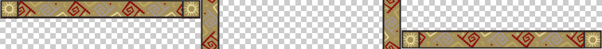

Несколько фоновых картинок
К одному элементу можно добавить сразу несколько фоновых изображений через единственное свойство background. Это позволяет обойтись одним элементом для создания сложного фона или одной картинкой, выводя её несколько раз с различными настройками. Все изображения со своими параметрами перечисляются через запятую, при этом вначале указывается картинка которая выводится поверх остальных изображений, а последней, соответственно, самая нижняя картинка. В примере 1 показано создание фона с тремя изображениями.
Пример 1. Три фона
<!DOCTYPE html>
<html>
<head>
<meta charset="utf-8">
<title>Фон</title>
<style>
body {
background: url(/example/image/animate-bg3.png) 90% 90% no-repeat fixed,
url(/example/image/animate-bg2.png) 40% 40% no-repeat fixed,
url(/example/image/animate-bg1.jpg) no-repeat fixed;
background-size: auto, auto, cover; /* Меняем масштаб */
}
</style>
</head>
<body></body>
</html>Если требуется отдельно задать какое-то стилевое свойство для фона, вроде background-size как в примере выше, то параметры для каждого фона перечисляются через запятую. Результат данного примера показан на рис. 1.

Рис. 1. Фон с тремя изображениями
Отдельные изображения для фона позволяют менять их положение, а также анимировать, как показано в примере 2.
Пример 2. Анимированный фон
<!DOCTYPE html>
<html>
<head>
<meta charset="utf-8">
<title>Фон</title>
<style>
body {
background:
url(/example/image/animate-bg3.png) 90% 90% no-repeat fixed,
url(/example/image/animate-bg2.png) 40% 40% no-repeat fixed,
url(/example/image/animate-bg1.jpg) no-repeat fixed;
background-size: auto, auto, cover;
animation: ball 40s linear infinite;
}
@keyframes ball {
from { background-position: 3000px 90%, 180% 40%, 0 0; }
to { background-position: -2000px 90%, -300px 20%, 0 0; }
}
</style>
</head>
<body></body>
</html>Подробнее про анимацию рассказывается далее.
Рассмотрим теперь как применять одну картинку для создания блока с рамкой (рис. 2). Ширина блока фиксированная, а высота тянется в зависимости от объёма содержимого блока.

Рис. 2. Рисованная рамка
На рисунке хорошо заметна верхняя и нижняя часть, которую требуется вырезать в графическом редакторе и расположить по горизонтали. Средняя часть выбирается таким образом, чтобы она повторялась без швов по вертикали. Картинка имеет выраженный повторяющийся орнамент, так что трудностей с выделением быть не должно. В итоге получится такое подготовленное изображение (рис. 3). Клетчатое поле обозначает прозрачность, оно позволяет задавать наряду с изображениями цветной фон и легко менять его через стили.

Рис. 3. Подготовленное для фона изображение
Сам фон выводится свойством background, оно же задаёт и координаты нужного фрагмента. Параметры каждого фона перечисляются через запятую и в данном случае имеет значение их порядок. Нам требуется, чтобы верхняя и нижняя часть блока не перекрывались, поэтому ставим их первыми (пример 3). Цвет фона указывается последним.
Пример 3. Несколько фоновых картинок
<!DOCTYPE html>
<html>
<head>
<meta charset="utf-8">
<title>Фон</title>
<style>
.aztec {
width: 212px; /* Ширина блока с учётом padding */
min-height: 240px; /* Минимальная высота */
background:
url(/example/image/aztec-bg.png) 0 0 no-repeat,
url(/example/image/aztec-bg.png) -576px 100% no-repeat,
url(/example/image/aztec-bg.png) -288px 0 repeat-y,
#f3dbb3;
padding: 38px; /* Поля вокруг текста с учётом границы */
}
</style>
</head>
<body>
<div class="aztec">
<p>Уицилопочтли — «колдун колибри», бог войны и солнца.</p>
<p>Тескатлипока — «дымящееся зеркало», главный бог ацтеков.</p>
<p>Обоим богам приносили человеческие жертвы.</p>
</div>
</body>
</html>Первый фон выводит верхнюю границу блока, второй фон — нижнюю, а третий вертикальные границы. Последним идёт цвет, который виден в прозрачной центральной части блока (рис. 4).

Рис. 4. Вид рамки